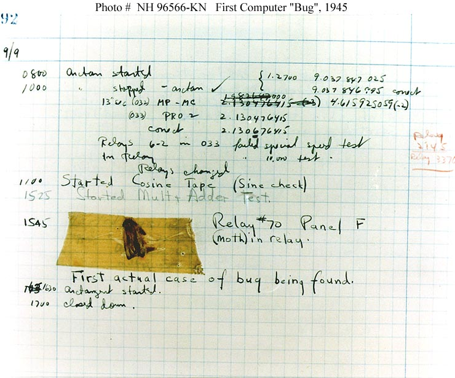

El primer "bug" documentado de la historia

El termino "bug" para referirse a un error informatico se popularizo gracias a un hecho ocurrido en 1947, en la Universidad de Harvard, mientras el equipo de la computadora Mark II realizaba pruebas de funcionamiento.
Los ingenieros notaron que la maquina presentaba fallas intermitentes y, al revisar uno de sus reles electromecanicos, encontraron una polilla atrapada entre los contactos. El insecto fue retirado y pegado en el registro de mantenimiento con la anotacion "First actual case of bug being found".
Aunque la palabra "bug" ya se usaba de forma coloquial antes, este episodio ayudo a fijar el termino dentro de la cultura informatica, y hoy es parte fundamental del vocabulario de cualquier persona que trabaje con tecnologia.
Volver al blog